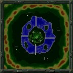

|  |
Volcano 2
| Spieler: | 4 |
| Größe: | Mittel |
| Beschreibung: | Vom Aufbau her dieselbe Karte wie Volcano, nur das es Sommer ist und hier Schifffahrt möglich ist. Leider kann man wegen der Brücken nicht in die anderen Gebiete vordringen, aber zumindest können die Schiffe zur Verteidigung beitragen. |
| Anmerkung: | Diese Karte eignet sich nicht für Spiele gegen den Computer(KI), da die Rohstoffe so verteilt sind, daß die KI Probleme mit dem Abbau hat. Für einen intelligenten Spieler sollte da allerdings keine großes Problem darstellen. Jede Partei kann auf ihrem Feld 4 Minen bauen, das sollte für den Anfang reichen! |
|